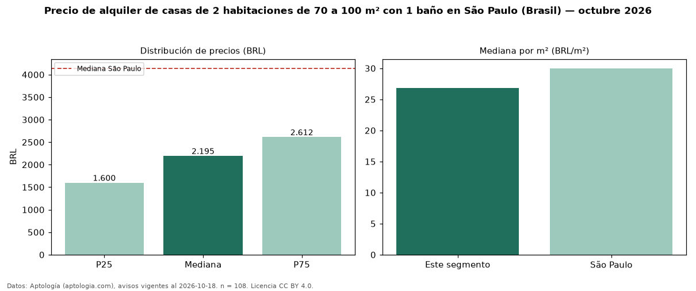

Precio de alquiler de casas de 2 habitaciones de 70 a 100 m² con 1 baño en São Paulo (Brasil) — octubre 2026
Con 108 avisos vigentes, el canon mediano de casas de 2 habitaciones de 70 a 100 m² con 1 baño en alquiler en São Paulo (Brasil) es BRL 2.195 al mes. Eso es 9 % menos que la mediana de las casas de 2 habitaciones de 70 a 100 m² en alquiler de São Paulo (BRL 2.400, n = 219); este segmento reúne el 49 % de esos avisos. Por metro cuadrado, la mediana es BRL 26,86/m² al mes (n = 107), 9 % por debajo de las casas de 2 habitaciones de 70 a 100 m² en alquiler de São Paulo (BRL 29,62/m²). El área mediana anunciada es 80 m². La cuota de mantenimiento o condominio mediana declarada es BRL 153 al mes (n = 42), aparte del canon. La mediana de todas las casas en alquiler de São Paulo es BRL 4.140 (−47 % de diferencia). La mitad central de los avisos va de BRL 1.600 a BRL 2.612 (razón 1,6), una dispersión moderada. 73 % de los avisos con el dato declara estacionamiento o cochera. Datos: Aptología (aptologia.com), CC BY 4.0 — https://www.aptologia.com/br/aluguel/sao-paulo. Archivos: PDF, CSV con las cifras y gráfica PNG.

| Avisos únicos | 108 |
|---|---|
| Percentil 25 | COP 1.600 |
| Mediana | COP 2.195 |
| Percentil 75 | COP 2.612 |
| Mediana por m² | COP 26 |
Fuente: avisos vigentes de portales inmobiliarios recopilados por Aptología, deduplicados (mínimo 30 avisos únicos por celda). Precios pedidos, no cerrados. Fecha: 2026-10-18.